This page explains how a video from the orbital jig becomes a Gaussian splat of the specimen alone: a 3D model you can turn and zoom, with the stand, the jig and the room left out.
It takes five stages:
- Capture. Film the specimen in a few orbits at different elevations (section 1; lighting for it in section 8).
- Solve the cameras. Work out where the phone was in every frame (section 2).
- Separate the specimen in 3D. Tell the specimen from its stand by where each sits along the orbit’s axis (section 3).
- Cut it out of every frame. Turn that 3D separation into a precise mask per frame (sections 4, 5 and 6).
- Train the splat on the masked frames (section 7).
Every picture and number below comes from one real run: a Meherrin Megalodon tooth (the Meg Tooth), filmed in three orbits.
1The capture
Three clips at three elevations on the arc, every 8th video frame kept: 258 frames, 1080 × 1920. IMG_4781 went round twice (740°), the other two a little over once, about 6–7° of turn between kept frames. A Gaussian splat needs to see every surface from more than one direction; one ring alone cannot see the tip's underside or the root's base, so the rings stack.
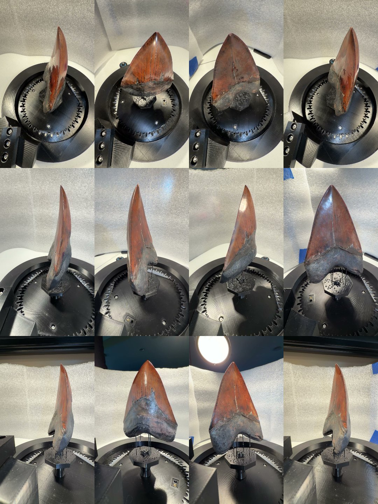
2Where the phone was
The solver is COLMAP, an open-source photogrammetry library from ETH Zürich, run on the CPU through its Python binding by a short script. It works with no reference object, no markers and no measurement. The only reference is the scene itself: things that look the same in several frames must be the same physical spot, and there is only one arrangement of cameras that makes all of those agree.
- Features. SIFT (David Lowe's detector, built into COLMAP) blurs each frame at a ladder of sizes and subtracts neighboring rungs. What survives the subtraction are blobs: spots brighter or darker than their surroundings at some particular size. A spot is kept only if it is the strongest response among its 26 neighbors in position and size, if its contrast clears a threshold, and if it is not merely a stretch of edge (a point on a straight edge looks like every other point along it). Each keeper gets a direction from its dominant gradient and a description: the gradients in a 4 × 4 grid around it, 8 directions each, 128 numbers that survive turning, scaling and a change in lighting. This run asked for up to 8,192 per frame.
- Matching. Every frame is compared with every other (33,153 pairs here). Each feature's nearest description in the other frame counts only if it is clearly nearer than the second nearest (Lowe's ratio test), so a feature that resembles several others is dropped as ambiguous. Then RANSAC repeatedly picks a handful of matches at random, works out the one camera move they imply, and counts how many of the rest agree; the move with the most agreement wins, and every match that disagrees with it is thrown out.
- Growing the model. Two well-matched frames fix a starting geometry and the first 3D points. Each further frame is placed by the points it already sees, and its new matches add more points.
- Bundle adjustment. All camera positions, all 3D points and the lens itself (focal length, distortion) are adjusted together until every point lands where it was seen in every frame. Here: all 258 frames, off by 0.49 pixel on average.
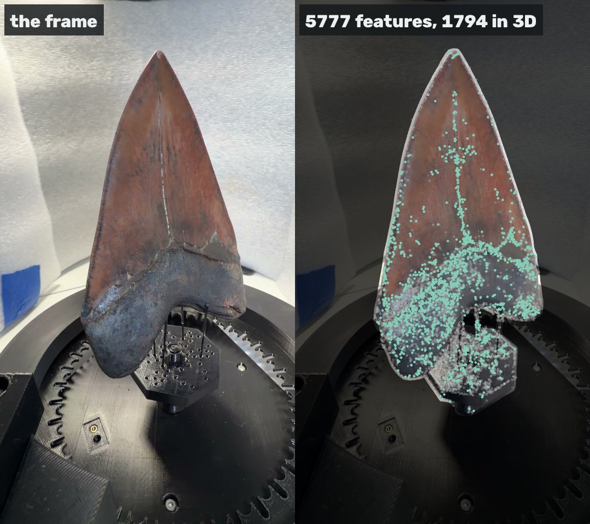
Why the mask matters. The jig moves the phone, not the tooth. The arc and the rotor ring ride with the phone, so in every frame they sit in the same place, which is perfect evidence that the camera never moved. Left in, they fight the tooth's features, and the first unmasked solve of IMG_4731 came out as a bad orbit. Masked, what is left is the tooth and its stand, which really are still, and the solve finds the phone circling them, as it did.
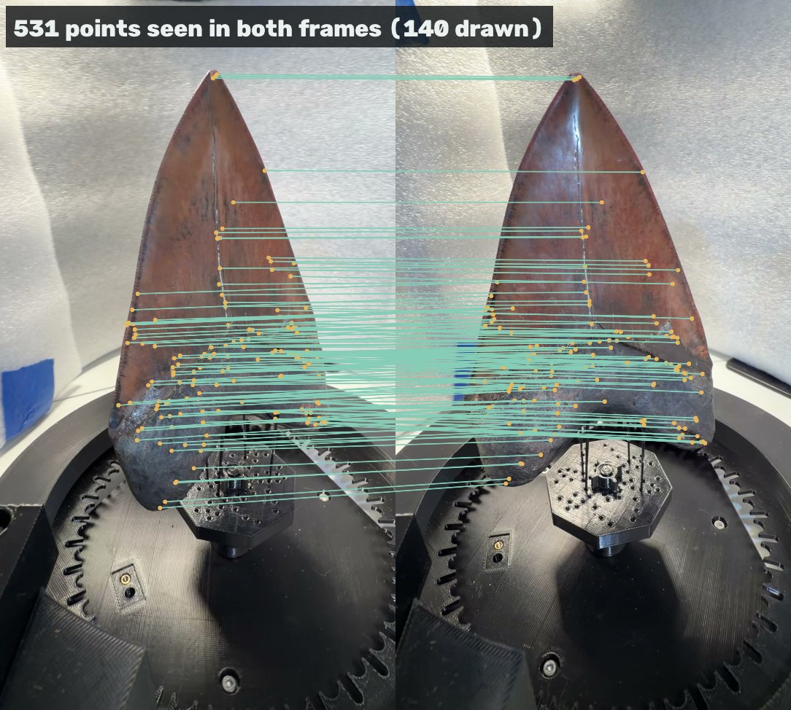
The result: cameras and points
Each point is one of those matched features, placed in 3D where its sightlines from different frames cross, and carrying the color it had in the photos. This run made 46,027 of them. They are sparse: dense where the surface has texture (the root, the crown's edges) and thin where it is smooth or dark. They are not the splat; they are the skeleton the splat starts from, and the evidence for the cut that follows.
The cameras land on three circles around one line, as they physically must. That line is the rotor's axis, which no one told the solver about. Fitting circles to the cameras recovers the axis and the orbit radius R, and everything that follows is measured in those terms, because the solve has no units of its own.
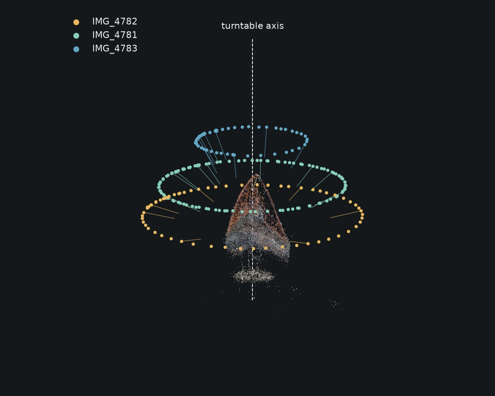
3Telling tooth from stand
With the axis known, every point has two simple numbers: how high it sits along the axis, and how far it is from it. Plotted that way the scene comes apart on its own. The tooth is the big cloud, the stand's plate is a thin bright layer below it, and between them is a gap with almost nothing in it, the space the rods cross.
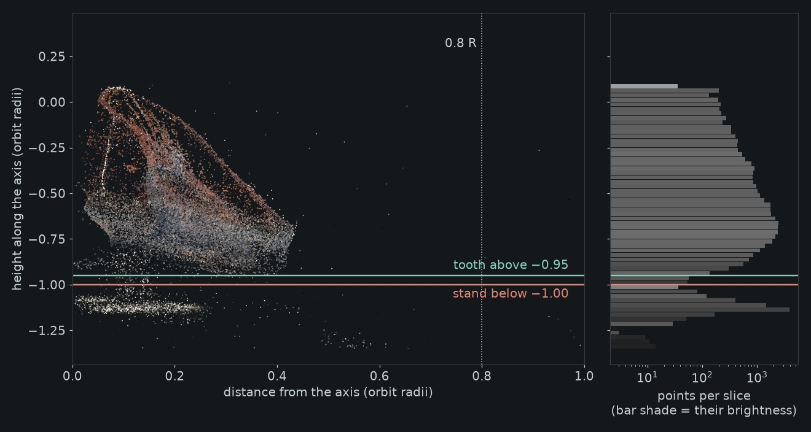
So the rule is plain: tooth is any point above −0.95, within 0.8 R of the axis, seen in at least 3 frames (37,914 points); stand is any point below −1.00 (7,326). This is what removed the stand, before a single picture was cut: it decides by where things are, which no amount of looking at one photo can.
It works because this tooth is perched with its root clear of the plate. A tooth set down among the pins would need a cut that follows the root rather than a flat one.
4A tooth outline for every frame
Each frame's camera is known, so the tooth's part of the reconstructed 3D point cloud (the points the cut assigned to the tooth) can be projected back into it. Grown and filled, they make a silhouette of the tooth for that exact frame. It is coarse at the edge, because the points are sparse, but it is never wrong about which object is the tooth.
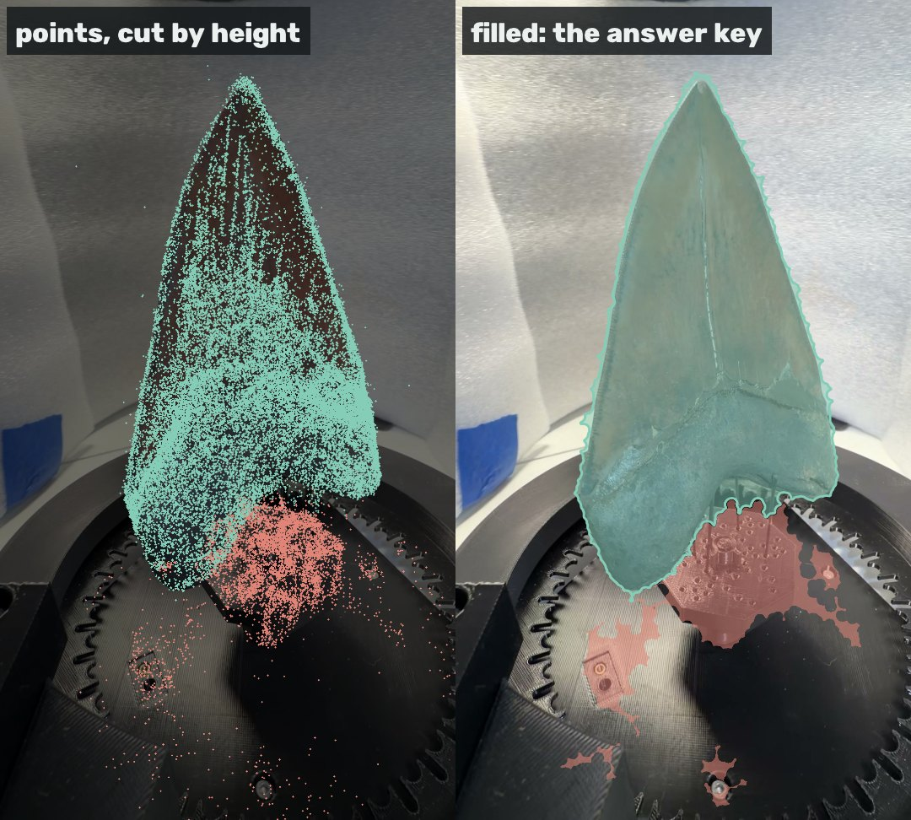
5Isolating the tooth in each frame
SAM 2 (Meta's Segment Anything 2.1, the large model, run on the GPU) draws precise edges around whatever it is asked for. It sees the whole frame; it does not decide what the subject is. The 3D cut makes that decision for it, in every frame, with no clicking:
- 20 "this" points spread across the silhouette, shrunk in from its edge so none lands on the background;
- 4 "not this" points on the stand;
- a box around the silhouette.
The result has holes filled and only its largest piece kept, so a stray rod tip cannot survive as an island.
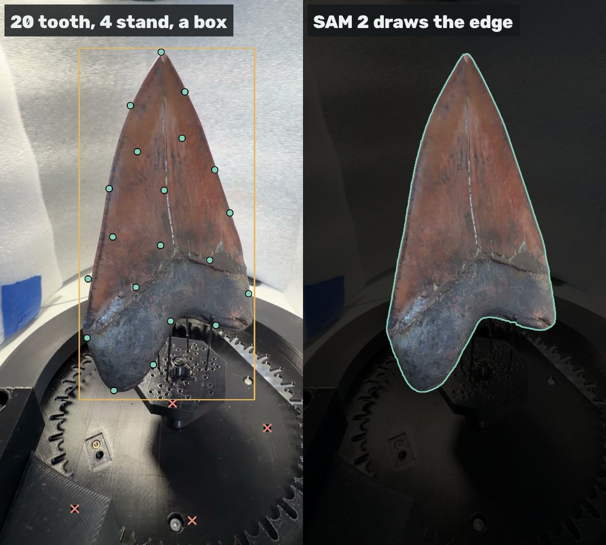
6Compared with background removal
rembg is the common way to isolate a subject from its background; this study uses its default model, u2net, through remove() with nothing else changed. Its models (u2net, and the newer isnet and BiRefNet) remove backgrounds by salience: whatever looks like the subject of the photo stays. On a plain sweep that is the right question, and it is why rembg works for product shots. Here it is the wrong one. The stand, its rods and the rotor ring look as much like a subject as the tooth does, more so as the camera looks down on them, and which of them wins changes from frame to frame.
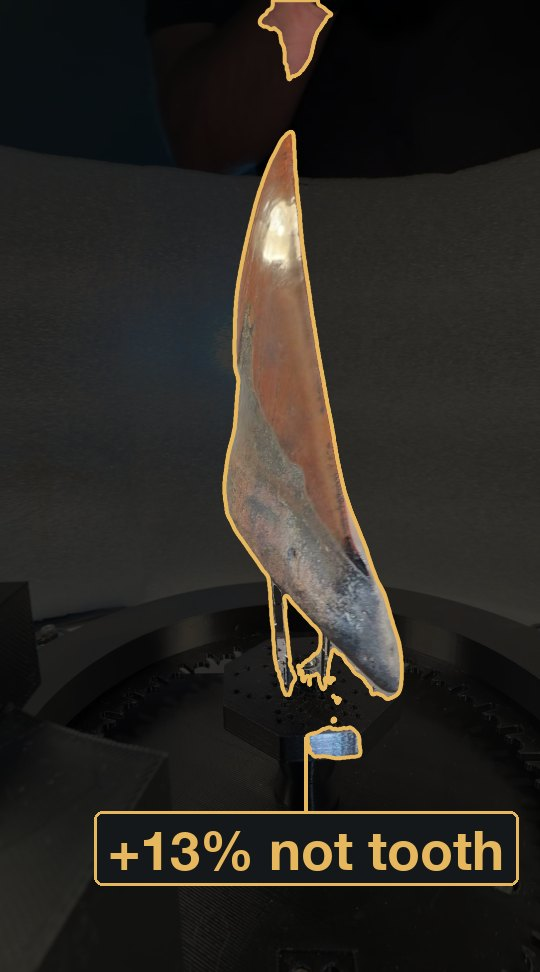
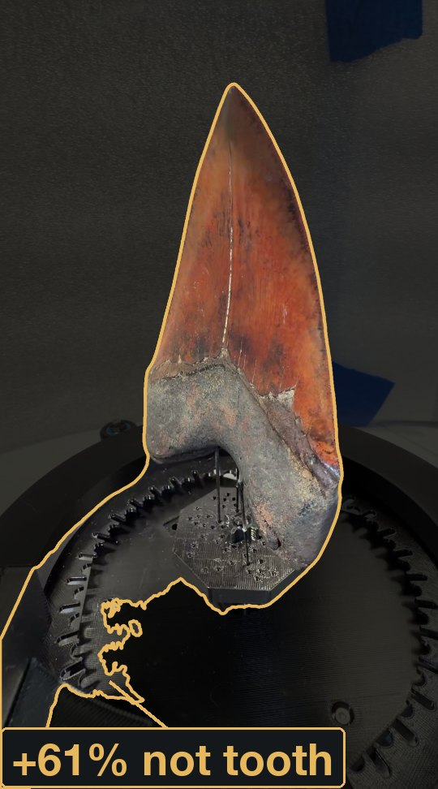
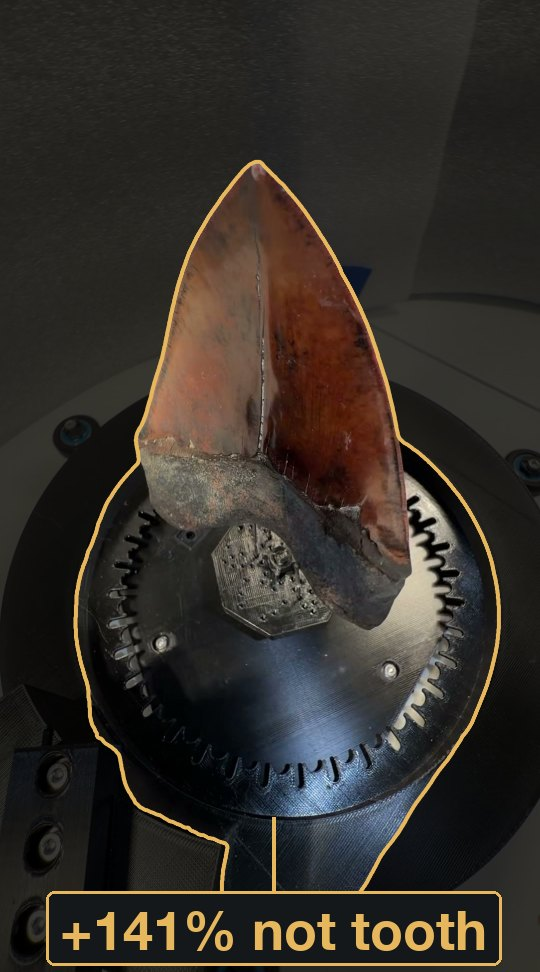
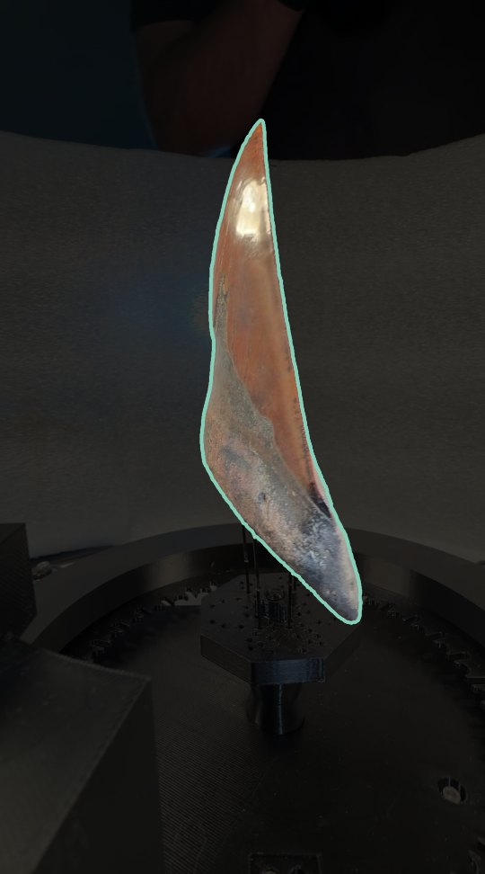
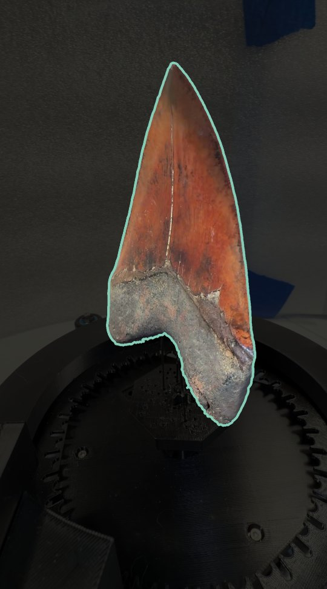
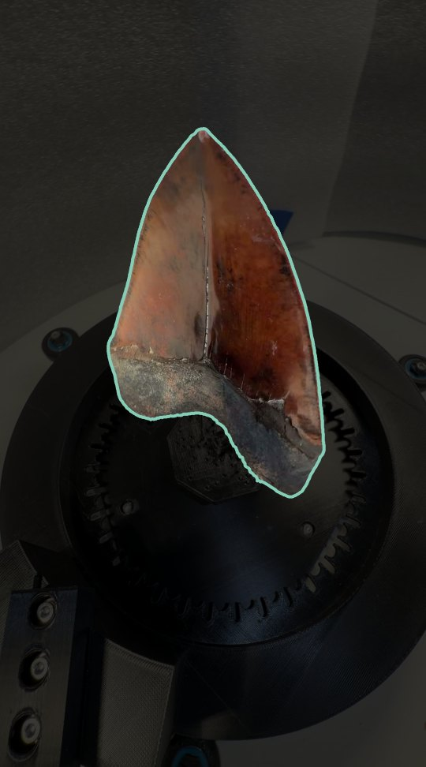
Every mask scored against the 3D answer key. The averages hide the difference: all of them keep about the same share of the tooth. They part ways on the worst frame and on the stand, which is what a splat suffers from: a stand that flickers in and out of the masks becomes a ghost floating under the tooth.
This run: the Meg Tooth, 258 frames
| masker | tooth kept | worst frame | frames keeping the platform | median IoU | worst IoU |
|---|---|---|---|---|---|
| rembg u2net | 98.4% | 68.5% | 136 of 258 | 0.78 | 0.20 |
| SAM 2, guided by the point cloud | 97.7% | 95.3% | 0 of 258 | 0.91 | 0.84 |
By ring, u2net kept more than a quarter of the tooth’s area again in junk on 3 of 70 frames at 11.5°, 36 of 116 at 30° and 52 of 72 at 61°. The higher the camera, the more the stand looks like the subject.
The earlier perched capture, IMG_4730/4731: three rembg models
| masker | tooth kept | worst frame | platform flips | IoU | splat: stray outside tooth |
|---|---|---|---|---|---|
| rembg u2net | 96.6% | 76.3% | 17 | 0.86 | — |
| rembg isnet-general-use | 97.1% | 79.8% | 14 | 0.80 | 14.2% |
| rembg BiRefNet | 97.1% | 87.8% | 25 | 0.82 | — |
| SAM 2, guided by the point cloud | 96.4% | 91.2% | 0 | 0.91 | 0.0% |
“Platform flips” counts how often, frame to frame, the platform switches between kept and dropped. A splat trained on isnet’s masks grew 14.2% of the tooth’s area again in stray splats outside it; on SAM 2’s, none.
What removed the stand. Not a better crop: SAM 2 sees the whole frame either way. It is the 3D cut deciding what the subject is, and handing SAM 2 exact “is tooth” and “is background” hints in the form its predictor takes: point_coords, an N × 2 array of pixel positions; point_labels, a 1 (tooth) or 0 (background) for each; and box, the silhouette’s x0, y0, x1, y1. SAM 2 supplies only the edge. The same pairing removed the platform on the perched capture as well, so it is the method and not this tooth. For a subject photographed on a plain background, rembg remains the easy tool; this pipeline earns its keep when the subject shares the frame with things that look as important as it does.
7Training the splat
Each frame goes to the splat trainer as an image whose transparency is the mask, softened by one pixel. The trainer grows and moves a cloud of colored, see-through ellipsoids for 30,000 steps until, from each camera, they render that frame's tooth. Masked-out pixels ask nothing of it, so nothing grows there.
Every 10th frame is held back. The score below is how well the splat renders a view it was never shown, measured on the tooth only.
What the dB measures. PSNR, peak signal-to-noise ratio, compares the splat’s render of a held-out view with the real photo of that view, pixel by pixel, over the tooth only. The “noise” is every difference between the two, whatever its cause: blur, a wrong color, a highlight in the wrong place. It is 10 × log10(1 / mean squared error), with pixel values from 0 to 1, so it reads as a typical error. 21.5 dB means the render is off by about 8% of full brightness at a typical pixel, roughly 21 of 255 levels. Every 6 dB halves that error: 27.5 dB would be about 4%. Identical images score infinitely high.
By ring: 61° scores 23.5 dB (off by about 7%), 30° 21.9 (8%), and the low 11.5° ring 18.8 (11.5%), the one with the lamps behind the tooth. A last crop, deleting any splat below the cut height, removed none: the lowest sat at −0.94 against −0.975.
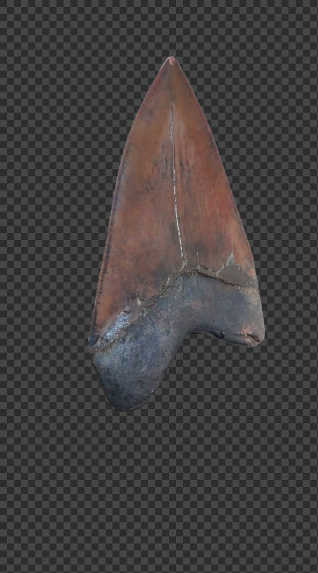
Turn it yourself
The finished splat, live, and the two single-ring splats from the lighting comparison in section 8: switch between them and the camera stays exactly where it is, so light off and light on can be compared from the same view. The camera orbits the tooth’s own center with the jig’s axis held upright, so the tooth never tips over and never drifts out of view, however it is dragged.
Drag to orbit. Scroll or pinch to zoom toward the pointer. Right-drag or shift-drag to slide the view; Reset brings it back. Keys: ←→ turn 15°, ↑↓ raise and lower, +− zoom. The heights are the three the tooth was filmed from; below 11.5° nothing was seen, so the camera stops a little under the horizon.
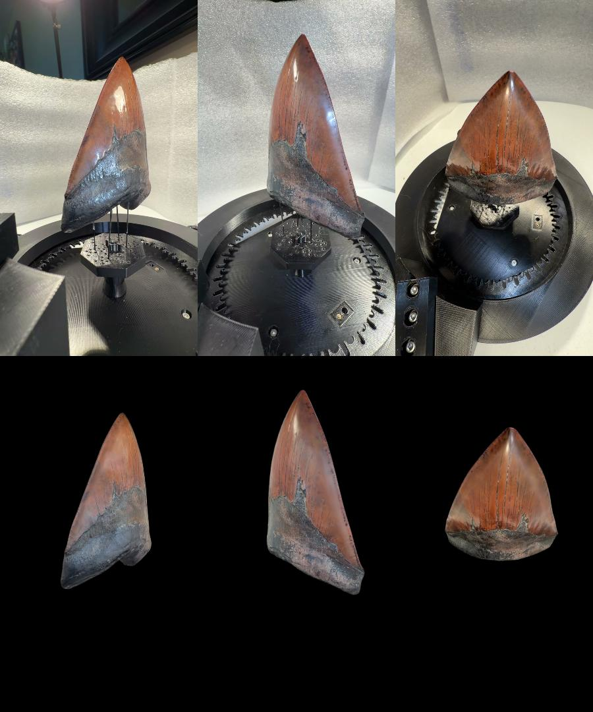
8Lighting the model and preserving gloss
The enamel is glossy and should look glossy. A splat can keep gloss: each splat’s color is allowed to change with the direction it is seen from. What it cannot keep is a highlight too sharp for that smooth change, or one that comes and goes because something passed in front of the lamp. Those it softens or smears, and zoomed far in they read as blotches.
- Leave the phone’s video light off. It is a small, hard source riding on the camera, and both halves of that work against a splat. Small and hard, it makes a needle-sharp highlight on glossy enamel, sharper than a splat’s smoothly varying color can hold. Riding on the camera, it moves with every view: the highlight always sits wherever the enamel faces the lens, so as the phone circles, it slides across the crown and lights a different spot in every frame. Training asks one fixed set of splats to agree with all of those frames at once, and the only compromise is a soft glow spread over the whole crown, the blotches seen up close. Light the tooth from fixed sources instead and the gloss stays, as sheen the splat can reproduce; the comparison below shows both.
- Keep the lamps out of the orbit’s path. The phone, its clamp and the arc circle the tooth, so a lamp at the height of the orbit is blocked for part of every turn: the tooth darkens while they pass, which is lighting no still scene could have, and the splat smears it in. That is what shadowed the low ring here. A lamp mounted above the arc’s highest point, or a source broad enough that the arc covers only a sliver of it (a tent, a white ceiling or board lit indirectly), is never blocked, or barely changes when it is.
- Large, soft, fixed sources (a tent, or lamps bounced off white boards, above the arc’s path, so it never crosses them) give a broad sheen that the splat reproduces, so the gloss survives without blotches.
Measured: the same ring with the phone’s light off, then on
IMG_4780 was shot just before IMG_4781, at the same 30° ring, with the phone’s video light off; the side lamps were on for both. It solved into the same model as the other three clips, all 324 frames at 0.52 pixel, so the tooth had not moved. Each clip trained its own splat from 66 frames (IMG_4781 thinned to match), the same steps and settings, every 10th frame held back.
| capture | held-out views | on the tooth | worst view | splats |
|---|---|---|---|---|
| light off, IMG_4780 | 7 | 20.4 dB | 18.3 dB | 27,070 |
| light on, IMG_4781 | 7 | 19.3 dB | 17.0 dB | 33,339 |
One ring alone scores below the three-ring splat’s 21.5 dB because each view has fewer neighbors to learn from; the comparison is between these two rows. Light off is about 1 dB better, a typical error of 9.5% of full brightness against 10.8%, on only 7 views each, so it is a lean in the expected direction rather than a verdict.
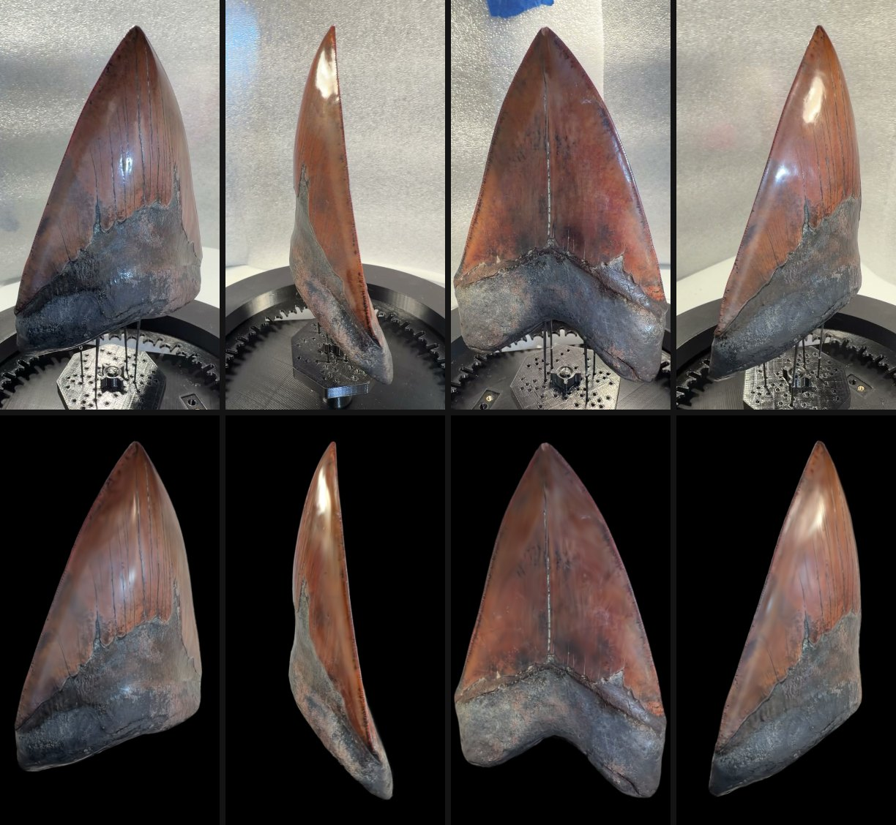
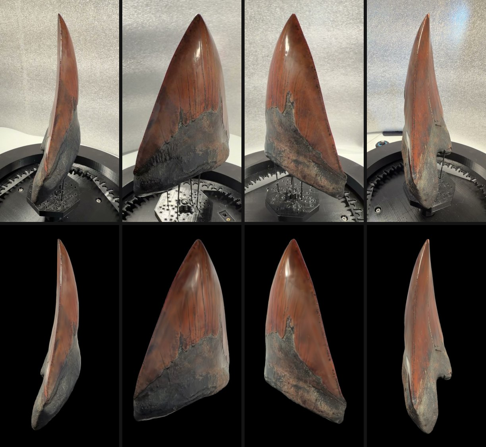
A number that does not separate them: the share of splats whose color depends more on viewing direction than on their base color is 27% with the light off and 21% with it on. Gloss from the fixed lamps uses that freedom just as much as the light’s glare, so it measures gloss, not glare.
Zoom adds the rest. The tooth spans about 1,030 pixels in these frames, and a half-screen close-up of the crown is about three times past what the phone recorded; the median splat covers 11 source pixels. Recording in 4K, or 48 MP stills, doubles that.